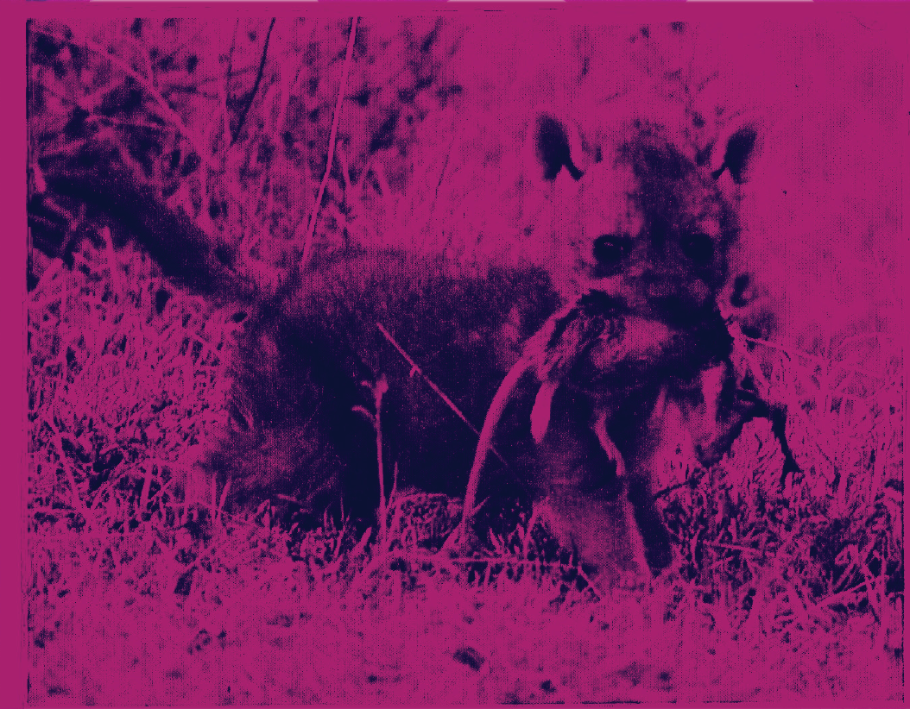
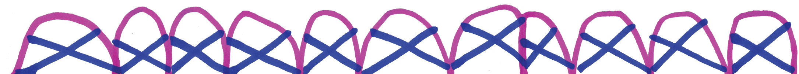

Press Press Young Scholars is a youth program developed by Press Press in partnership with Baltimore City Community College Refugee Youth Project (RYP). In the program, six youth artists and writers were hired as contributors to create works specifically to be published in Sentiments: Expressions of Cultural Passage. Youth attended a month-long intensive at the Press Press studio that included studio visits and workshops with other Sentiments contributors, Adriana Monsalve and Bilphena Yahwon, participated in group discussions on themes surounding cultural passage, immigration, Baltimore, and developed their projects through one-on-one learning with facilitators.
Language
by Luwam Teweldebirhan
Decision / What is Sanctuary?
by AbdulAzeem Omotosho
Decision
Since I have been given the opportunity to have a page in the press press book publication, I haven’t been able to decide on what to write about.
Since I have been given the opportunity to go to college, I couldn’t decide on what college to go.
Since I have been given an opportunity to choose a career I couldn’t decide on which career to choose.
But since I realized am old enough to make my own decisions, I have since then decided to be me and nobody else.

What is Sanctuary?
Sanctuary has a lot of meaning and they differ from individuals. But to me sanctuary is a quiet place where I can be alone, by myself worry free and in control of my life. It’s not a physical thing, but rather a state of mind. When I relocated from Nigeria to the United States was a moment of sanctuary to me because I had left my old life and will be starting over a new life.

Everything is Possible
by Filimon Fishaye
Coming to the United States from Ethiopia about four years ago, I was faced with one of the biggest obstacles of my life: adapting to the American culture.
Much of the reason I decided to come here to the states was due to the lack of opportunity for obtaining an education back home. In fact, most of the 18-year-olds in Ethiopia were forced to join the army and fight for the country. That said, I chose to come to this country primarily for the chance to attain a well-paying job and be able to give back to the community.
Arriving here in Baltimore, Maryland, I was immediately placed in the 8th grade. To say the least, the culture in Ethiopia was vastly different from that seen here in the U.S. For starters, the barrier of language served as a huge deterrence in my progression.
In school itself, I had a difficult time communicating with classmates, teachers, and everyone around me. Whenever my teachers would pick me to answer a question in class, I would always have fear of other kids making fun of me for my accent or my lack of English literacy. It came down to a point where I would just stop communicating with my teachers and friends entirely, and on some occasions, skip school. I was pitying myself.
Outside of school, I was faced with handling much of the responsibilities of supporting my family. My mother, born and raised in the country of Ethiopia, was unable to speak English. Unfortunately my father was out of the picture. As a result, I was forced to carry many more tasks than I was used to back in Ethiopia.
This included getting the groceries on a weekly basis and more difficult things such as communicating on behalf of my mother to different people. For example, I was often required to communicate with my mother’s physician, which in itself was a grave task, because I was unable to speak English.
Having been faced with the overburdens of all these new life changes and adjustments, I was unsure of how to go about life. I contemplated just dropping out of school and finding other means of making a living in order to support my family. Then came my life saver: Soccer Without Borders.
Growing up in Ethiopia, I grew a fond interest in the sport of soccer. Being able to play the sport of soccer served as an escape from reality in the sense that I could just get away from all the stressors of this world. As I left Ethiopia, I was unsure if I would even have time for the sport with all the responsibilities I would have to partake in. Fortunately, in my last year of middle school, I came to know a soccer organization called Soccer Without Borders (SWB), which serves primarily to help newcomer refugees aged 5-21 in Baltimore City, “through after school and summer programs with an emphasis on academic enrichment, language development, and family engagement.” I was able to participate in this program for about six months, and the progress I made was unexplainable. Not only did SWB help me create a lot of close knit friendships, improve my English skills, and increase my persistence, it also gave me the opportunity to engage in the sport that I love so dearly.
With my drastic improvement in confidence and with the help of SWB, I was able to overcome my shyness and expand my horizons. When I came to high school, I made countless invaluable bonds with both teachers and friends. I even built up the confidence to try out for the high school soccer team, which I was fortunate enough to play for throughout my high school career. Being a part of the soccer team helped me feel more of a sense of belonging and comfort in the community; I knew I had coaches and friends I could go to for help with any issue I may be faced with. It was great to know I had a support system to help me overcome any other obstacles I may endure. As I progressed in high school, I was able to take myriad honors and AP classes that enabled me to grow academically and challenge myself on a day-to-day basis.
Altogether, being introduced to Soccer Without Borders (SWB) and expressing myself through the sport I loved, helped me to grow mentally, academically, and socially, and express myself in a way I never had before. With my high school career coming to an end, I look forward to the opportunity of attending college and continuing my pursuit of education in computer engineering. Along the way, I hope to gain new experiences and knowledge that will help me become successful and able to give back to the community at a later stage in my life. For now, I serve as a volunteer soccer coach and subject tutor for SWB, but my end goal is to be able to motivate and pass on wisdom to those just like me in becoming successful and reaching new heights in their lives. I believe that by inspiring and serving as a mentor to the youth, I will be able to have the greatest impact on society and an everlasting effect. Nelson Mandela put it best when he said, “Education is the most powerful weapon which you can use to change the world.”

Eritrean Easter
by Salam Gebremichael


First Time in America
When I first came to America I was scared because there was new people and new faces. But my sister was there with me when I went to school for the first time people were staring at me like I was some zombie. I was scared because I was not in the same class with my other half, that was the hardest, but at the end it was worth it. But I found out why the kids at school were staring me and my sister because I was wearing our traditional clothes.
Press Press has hosted regular publishing, art, and writing workshops with teens and young adults in an immigrant and refugee only space since 2014. These workshops are designed to counter the standard model of ESL (English Second Language) learning. The standard model operates in a way that erases or ignores the identities of the learners in an effort to fit them into the hegemonic linguistic mode of the United States. The collaborative space Press Press has created, conversely, places the identities and narratives of the participants as central in the experience of learning and using English; or learning how ‘to be’ in English as one’s second language without erasing one’s native voice.